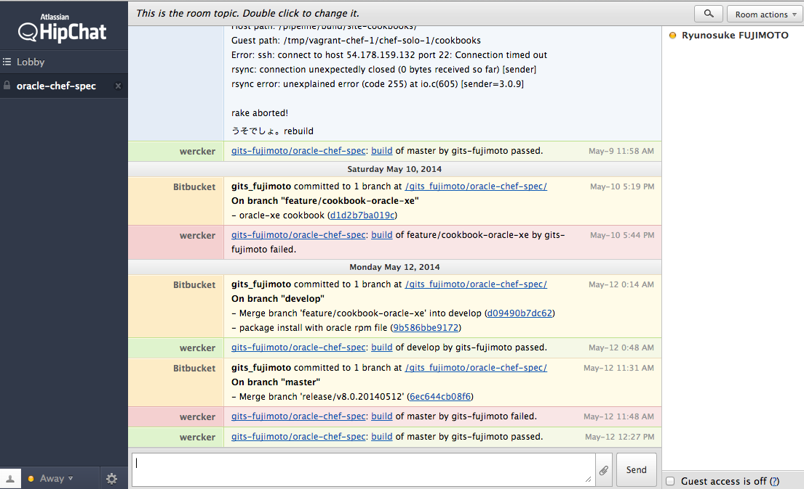

頼りになるOracle DBAになるための はじめの一歩
JAWS-UG中央線 第2回勉強会
2014.05.30 Fri.
藤本 竜之介
Ryunosuke FUJIMOTO
@r_fujimoto
2014- Oracle DBA に任命される
2013- Infrastructure as Code に目覚める
2011- Googleライクな特許検索サービスを開発
DBA
DBAがやりたいこと
Oracleの動作検証
Schemaの変更管理
DBのバックアップ/リストア
SQLの性能チューニング
とにかくoracle使える環境がほしい
30分以内で!!!
Oracle on AWS
EC2 vs RDS

EC2
- Oracleのインストールが必要
- sshして、sqlplus できる
- sshして、expdp/impdp できる
- 無料利用枠あり
- Tokyo Region, m3.medium: $0.161/h
RDS
- Oracleのインストールが不要（パラメータを選択するだけ）
- ssh (して、sqlplus) できない
- ssh (して、expdp/impdp) できない
- 無料利用枠なし
- Tokyo Region, db.m3.medium: $0.245/h
setup oracle on EC2
- oracle-xe 11gをインストール
- ti.microを使う場合の注意点
私も Oracle 使いたい
URL教えるから 自分でやってみ
o(´^｀)o ｳｰ
30分で oracleを料理してみる
oracleを料理するには？
Infrastructure as Code
Git
CI
Communication
hipchat
私も Oracle 使いたい
これやってみ
$ git clone git@bitbucket.org:gits_fujimoto/oracle-chef-spec.git
$ cd oracle-chef-spec
$ sh cook-oracle